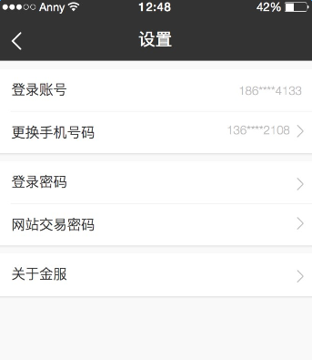

列表
相关说明
基于mui的列表样式，但做了某些适合项目的改动。需要引入列表样式文件selectMui.less。

在这个UI图中，登录帐号&更换手机号码为一组列表，登陆密码&网站交易密码为一组列表，关于金服为一个列表，点击这些列表可跳转页面。
列表的基本结构：左侧为文字，右侧为箭头（正常箭头为向右的）。
凡是这样的结构，都可以使用列表实现。
使用方法
列表的基本样式：文字黑色，一组列表中的最后一条列表没有下边框。
注： 列表可以放在表单中，作为表单的一类元素使用，点击出现选择器。 此时
selectMui.less会被表单样式newFormMui.less引入，且在其中对列表样式做适应表单样式的重置：文字灰色，每一组列表实际上只有一条，且该条列表有下边框。 相关逻辑会在表单组件中进行说明。
在html页面中使用固定的结构表示列表，以基本结构为例：
<!-- 这里在列表的外面使用了一个带上边距的卡片视图 -->
<div class="mui-card marginTop">
<ul class="mui-table-view">
<li class="mui-table-view-cell">
<a class="mui-navigate-right" href="javascript:;">登录密码</a>
</li>
<li class="mui-table-view-cell">
<a class="mui-navigate-right" href="javascript:;">网站交易密码</a>
</li>
</ul>
</div>
根据这样的基本结构，列表有几种变化供实际情况使用：
1）右侧箭头变为向下
2）页面打开请求初始数据，根据某些状态判断，使右侧箭头显示或隐藏（箭头处变为文字，或有箭头同时有文字）
3）右侧无箭头
4) 对于整组列表来说，最后一条的下边框是已经去掉了的。但若需要去掉下边框
表单中（作为选择器时）适用的：
5）文字变为黑色（用在表单中，作为选择器选中数据后的状态改变）
6）当前列表作为poppicker（点击出现选择器）时，若数据已反显，需要禁止点击
<!-- 1. 右侧箭头变为向下的，在li的class属性里添加mui-collapse -->
<ul class="mui-table-view">
<li class="mui-table-view-cell mui-collapse">
<a class="mui-navigate-right" href="javascript:;">登录密码</a>
</li>
</ul>
<!-- 2.
情况一：右侧箭头变为文字：
在a标签后添加一个class为word的span，作为文字内容的容器
在a标签上添加class为hasWord，
情况二：右侧箭头依然存在，但箭头左侧有文字
在a标签后添加一个class为word hasRight的span，作为文字内容的容器
-->
<ul class="mui-table-view">
<!-- 情况一 -->
<li class="mui-table-view-cell">
<a class="mui-navigate-right hasWord" href="javascript:;">登录密码</a>
<span class="word"></span>
</li>
<!-- 情况二 -->
<li class="mui-table-view-cell">
<a class="mui-navigate-right" href="javascript:;">登录密码</a>
<span class="word hasRight"></span>
</li>
</ul>
<!-- 3. 右侧无箭头，去掉a标签上的mui-navigate-right class-->
<ul class="mui-table-view">
<li class="mui-table-view-cell">
<a class="" href="javascript:;">登录密码</a>
</li>
</ul>
<!-- 4. 去掉下边框，在li的class上添加noBor -->
<ul class="mui-table-view">
<li class="mui-table-view-cell noBor">
<a class="mui-navigate-right" href="javascript:;">登录密码</a>
</li>
</ul>
<!-- 5. 文字变为黑色，在a标签上添加class为hasSelect -->
<ul class="mui-table-view">
<li class="mui-table-view-cell">
<a class="mui-navigate-right hasSelect" href="javascript:;">登录密码</a>
</li>
</ul>
<!-- 6. 禁止点击， 在a标签上添加class为unable -->
<ul class="mui-table-view">
<li class="mui-table-view-cell">
<a class="mui-navigate-right unable" href="javascript:;">登录密码</a>
</li>
</ul>